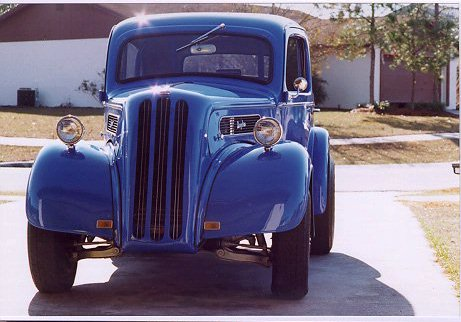
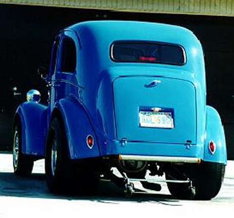

~ Byron's Gasser Madness! ~
~ Wayne Dassele's 48 Anglia ~
|
 |
|
60' GASSER 1948 Anglia ( English Ford ) Anglia now has 406sbc solid roller .600 lift duration @.050 258in ex 266
Brodix heads,
Brodix intake, 514 gears, 700r4 trans is a street rod its a 52 body titled but has 48 grille so
I call it a 48 406 sbc solid roller 600 lift Wayne Dassele Brandon, Florida |
|  |
| Also included is a video if downloaded, this was in Bradenton, Florida, Desoto Drag strip 1992 when i one my Class & Top Eliminator that day . Figured ( Avi video ) might be interesting for the old gasser folks to see. |